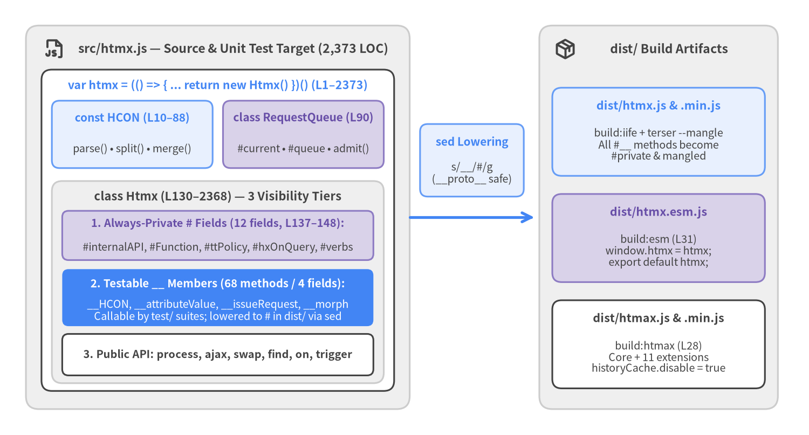
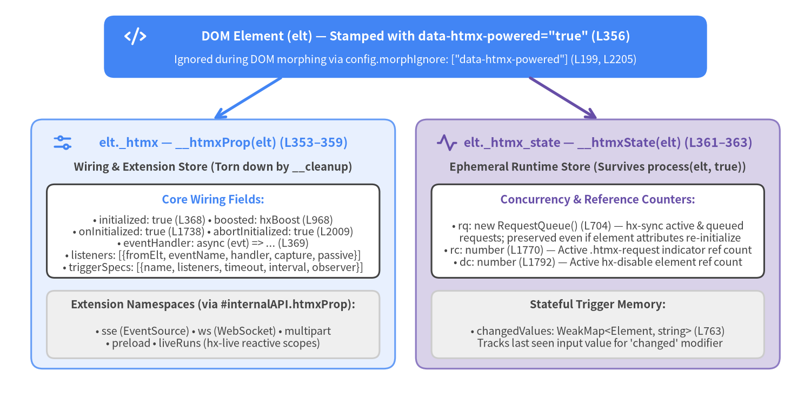
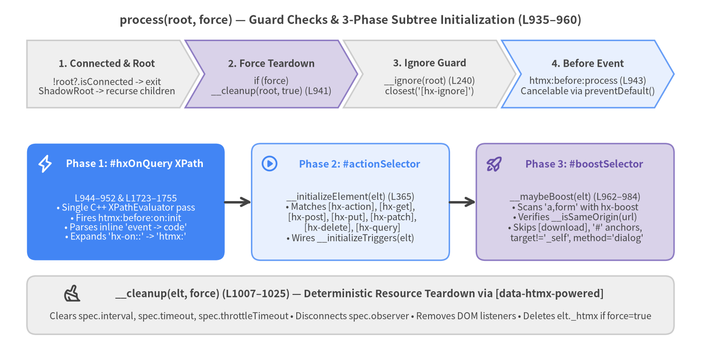

1. Module & State Architecture
htmx v4.0.1 encapsulates its entire hypermedia runtime inside a single 2,373-line ES2022 module (src/htmx.js) structured around three top-level constructs (HCON, RequestQueue, and class Htmx), a build-time sed private-field lowering pipeline (__ $\rightarrow$ #), CSP-safe Constructable Stylesheets (CSSStyleSheet), dual per-element expando stores (elt._htmx and elt._htmx_state), and deterministic DOM subtree scanning via process() and precompiled XPathEvaluator queries.

Source Code
from drawlib.canvas import save, setup
from drawlib.icons import phosphor
from drawlib.lines import line
from drawlib.shapes import rectangle
from drawlib.styles import Styles
from drawlib.text import text
setup(width=156, height=84, dpi=150)
# Left Panel: src/htmx.js Source Topology
rectangle((42, 42), width=74, height=74, style=Styles.Neutral.patch(shape_r=2.5))
phosphor.file_js((10.5, 74.5), width=4.2, style=Styles.DarkBold)
text(
(45, 74.5),
"src/htmx.js — Source & Unit Test Target (2,373 LOC)",
style=Styles.DarkBold.patch(text_size=11.0),
)
# Outer IIFE box inside Left Panel
rectangle((42, 39.5), width=68, height=62, style=Styles.White.patch(shape_r=2.0))
text(
(42, 67.5),
"var htmx = (() => { ... return new Htmx() })() (L1–2373)",
style=Styles.PrimaryBold.patch(text_size=10.2),
)
# Top Two Peer Constructs: HCON & RequestQueue
rectangle((25.5, 58), width=31, height=13, style=Styles.PrimaryNeutral.patch(shape_r=1.5))
text((25.5, 61.2), "const HCON (L10–88)", style=Styles.PrimaryBold.patch(text_size=10.0))
text((25.5, 55.2), "parse() • split() • merge()", style=Styles.Dark.patch(text_size=9.5))
rectangle((58.5, 58), width=31, height=13, style=Styles.SecondaryNeutral.patch(shape_r=1.5))
text((58.5, 61.2), "class RequestQueue (L90)", style=Styles.SecondaryBold.patch(text_size=10.0))
text((58.5, 55.2), "#current • #queue • admit()", style=Styles.Dark.patch(text_size=9.5))
# Main Class Htmx Box
rectangle((42, 29.5), width=64, height=39, style=Styles.Neutral.patch(shape_r=2.0))
text(
(42, 46.0),
"class Htmx (L130–2368) — 3 Visibility Tiers",
style=Styles.DarkBold.patch(text_size=10.5),
)
rectangle((42, 38.5), width=60, height=9.5, style=Styles.SecondaryNeutral.patch(shape_r=1.2))
text(
(42, 40.8),
"1. Always-Private # Fields (12 fields, L137–148):",
style=Styles.SecondaryBold.patch(text_size=9.6),
)
text(
(42, 36.2),
"#internalAPI, #Function, #ttPolicy, #hxOnQuery, #verbs",
style=Styles.Dark.patch(text_size=9.5),
)
rectangle((42, 26.5), width=60, height=11.0, style=Styles.PrimaryFlat.patch(shape_r=1.2))
text(
(42, 29.2),
"2. Testable __ Members (68 methods / 4 fields):",
style=Styles.WhiteBold.patch(text_size=9.8),
)
text(
(42, 24.0),
"__HCON, __attributeValue, __issueRequest, __morph\nCallable by test/ suites; lowered to # in dist/ via sed",
style=Styles.White.patch(text_size=9.5),
)
rectangle((42, 15.5), width=60, height=8.0, style=Styles.White.patch(shape_r=1.2))
text(
(42, 15.5),
"3. Public API: process, ajax, swap, find, on, trigger",
style=Styles.DarkBold.patch(text_size=9.6),
)
# Center Arrow & Build Step
line((79, 42), (103, 42), arrow_head="->", style=Styles.PrimaryBold)
rectangle((91, 53), width=20, height=14, style=Styles.PrimaryNeutral.patch(shape_r=1.5))
text((91, 56.5), "sed Lowering", style=Styles.PrimaryBold.patch(text_size=10.0))
text((91, 50.5), "s/__/#/g\n(__proto__ safe)", style=Styles.Dark.patch(text_size=9.5))
# Right Panel: Production Artifacts (dist/)
rectangle((127, 42), width=46, height=74, style=Styles.Neutral.patch(shape_r=2.5))
phosphor.package((109, 74.5), width=4.2, style=Styles.DarkBold)
text(
(129, 74.5),
"dist/ Build Artifacts",
style=Styles.DarkBold.patch(text_size=11.0),
)
rectangle((127, 58.5), width=41, height=17, style=Styles.PrimaryNeutral.patch(shape_r=1.8))
text((127, 63.5), "dist/htmx.js & .min.js", style=Styles.PrimaryBold.patch(text_size=10.3))
text(
(127, 56.0),
"build:iife + terser --mangle\nAll #__ methods become\n#private & mangled",
style=Styles.Dark.patch(text_size=9.5),
)
rectangle((127, 38.0), width=41, height=17, style=Styles.SecondaryNeutral.patch(shape_r=1.8))
text((127, 43.0), "dist/htmx.esm.js", style=Styles.SecondaryBold.patch(text_size=10.3))
text(
(127, 35.5),
"build:esm (L31)\nwindow.htmx = htmx;\nexport default htmx;",
style=Styles.Dark.patch(text_size=9.5),
)
rectangle((127, 17.5), width=41, height=17, style=Styles.White.patch(shape_r=1.8))
text((127, 22.5), "dist/htmax.js & .min.js", style=Styles.DarkBold.patch(text_size=10.3))
text(
(127, 15.0),
"build:htmax (L28)\nCore + 11 extensions\nhistoryCache.disable = true",
style=Styles.Dark.patch(text_size=9.5),
)
save()
1. Single-File IIFE & Class Topology (src/htmx.js L1–2373)
Unlike htmx 2.x—which placed dozens of helper functions inside a 4,000+ line closure—htmx v4.0.1 organizes its entire core inside an Immediately Invoked Function Expression (var htmx = (() => { ... return new Htmx() })()) containing exactly three top-level declarations:
const HCON(L10–88): A stateless parser and deep-merger for htmx Configuration Object Notation (HCON.parse,HCON.split, andHCON.merge), detailed in Chapter 2.class RequestQueue(L90–128): A compact finite-state machine using native private fields (#current = nulland#queue = []) that implements per-elementhx-syncconcurrency strategies (admit,continue, andabort), covered in Chapter 4.class Htmx(L130–2368): The singleton runtime instantiated atL2370(return new Htmx()), owning global configuration (this.config), extension registries (__extMethods,__registeredExt), DOM scanning (process,__cleanup), request orchestration (__issueRequest), and DOM reconciliation (swap,__morph).
1.1 Constructor Bootstrap & Deferred Initialization (L150–228, L1251–1265)
When new Htmx() executes (L150–182), the constructor runs a six-step synchronous bootstrap before deferring DOM traversal until the document body is ready:
- Configuration &
<meta name="htmx-config">Merge (__initHtmxConfig,L184–213): Setsthis.version = '4.0.1', initializes the 19 default properties onthis.config, queriesdocument.querySelector('meta[name="htmx-config"]'), merges itscontentattribute (accepting either HCON or JSON) viaHCON.merge(metaConfig.content, this.config), and snapshotsthis.__approvedExt = this.config.extensionsso the allowed extension whitelist cannot be mutated after boot. - Constructable Stylesheet Adoption (
__initRequestIndicatorCss,L215–228): Unlessthis.config.includeIndicatorCSS === false, htmx constructs an in-memorynew CSSStyleSheet(), populates the.htmx-indicatorand.htmx-requestopacity/visibility transition rules viareplaceSync(), and appends the sheet todocument.adoptedStyleSheets. Unlike htmx 2.x's<style>tag injection into<head>,adoptedStyleSheetsnever parses an inline DOM<style>node and therefore never triggers Content Security Policy (style-src) violations. - Action Selector Compilation (
#actionSelector,L153): Precomputes the comma-joined CSS selector string matching both standardhx-*and prefixeddata-hx-*verb attributes viathis.__prefixSelector('[hx-action],[hx-get],[hx-post],[hx-put],[hx-patch],[hx-delete],[hx-query]'). - Precompiled XPath Expression (
#hxOnQuery,L154): Instantiates a singlenew XPathEvaluator().createExpression(...)to locate wildcardhx-on*anddata-hx-on*attributes across arbitrary DOM subtrees without slow JavaScript attribute loops. - Extension Bridge Binding (
#internalAPI,L155–175): Creates a 15-method capability object bound tothis(HCON,attributeValue,parseTriggerSpecs,determineMethodAndAction,createRequestContext,collectFormData,getAttributeObject,insertContent,morph,isSoftMatch,initSecurity,onTrigger,htmxProp,triggerHtmxEvent, andexecuteJavaScript). This object is stored in the private#internalAPIfield and passed exclusively toextension.init(this.#internalAPI)duringregisterExtension()(L234). - Deferred
initialize()Scheduling & Navigation API Wiring (L176–181,L1251–1265): Ifdocument.readyState === 'loading', htmx registersdocument.addEventListener("DOMContentLoaded", init); otherwise it queuessetTimeout(init)so<script>tags or extension registrations immediately followinghtmx.jscan execute before the initial DOM scan. Wheninitialize()runs (L1251–1265), it wires history restoration once (#historyInitialized = true)—preferring the modern Navigation API (window.navigation.addEventListener('navigate', ...)interceptingtraversenavigations on Chromium/WebKit while excluding Firefox via!/firefox/i.test(navigator.userAgent)) with a fallback towindow.addEventListener('popstate', ...)—and invokesthis.process(document.body).
// src/htmx.js L150–182, L215–228, L1251–1265 — Constructor Bootstrap, CSSStyleSheet & initialize()
constructor() {
this.__initHtmxConfig();
this.__initRequestIndicatorCss();
this.#actionSelector = this.__prefixSelector('[hx-action],[hx-get],[hx-post],[hx-put],[hx-patch],[hx-delete],[hx-query]');
this.#hxOnQuery = new XPathEvaluator().createExpression(
`.//*[@*[${this.__prefixes("hx-on").map(p => `starts-with(name(), "${p}")`).join(' or ')}]]`
);
this.#internalAPI = {
HCON,
attributeValue: this.__attributeValue.bind(this),
parseTriggerSpecs: this.__parseTriggerSpecs.bind(this),
// ... 12 additional bound primitives (see Chapter 6)
};
let init = () => this.initialize();
if (document.readyState === 'loading') {
document.addEventListener("DOMContentLoaded", init);
} else {
setTimeout(init);
}
}
__initRequestIndicatorCss() {
if (this.config.includeIndicatorCSS !== false) {
let indicator = this.config.indicatorClass;
let request = this.config.requestClass;
try {
this.indicatorStyleSheet = new CSSStyleSheet();
this.indicatorStyleSheet.replaceSync(
`.${indicator}{opacity:0;visibility: hidden} ` +
`.${request} .${indicator}, .${request}.${indicator}{opacity:1;visibility: visible;transition: opacity 200ms ease-in}`
);
document.adoptedStyleSheets.push(this.indicatorStyleSheet);
} catch {}
}
}
initialize() {
if (this.config.history && !this.#historyInitialized) {
this.#historyInitialized = true;
if (window.navigation && !/firefox/i.test(navigator.userAgent)) {
navigation.addEventListener('navigate', (event) => {
if (event.navigationType === 'traverse' && event.canIntercept && !event.hashChange)
event.intercept({handler: () => this.__restoreHistory()});
});
} else {
window.addEventListener('popstate', (event) => this.__restoreHistory(event.state));
}
}
this.process(document.body);
}
2. The Testable Private Field Lowering Trick (package.json L27–37)
A classic architectural trade-off in JavaScript library design is balancing white-box unit testability against encapsulation and bundle size. Native ES2022 #private fields enforce hard runtime encapsulation and allow minifiers like Terser to mangle private member names down to 2-character tokens (#a, #b), but they make it impossible for unit tests to call internal parsers or helpers directly.
htmx v4 resolves this trade-off with a two-tier naming convention in src/htmx.js paired with a sed lowering step in package.json:
- True
#privateFields insrc/htmx.js(L137–148): Twelve fields (#internalAPI,#Function,#AsyncFunction,#ttPolicy,#actionSelector,#boostSelector,#verbs,#hxOnQuery,#transitionQueue,#historyAbort,#historyInitialized,#processingTransition) are declared with native#syntax even in source. This guarantees that security-sensitive references (#Function,#AsyncFunction,#ttPolicy,#internalAPI) cannot be monkey-patched by untrusted scripts in any environment. - Double-Underscore
__Members insrc/htmx.js: Internal fields (__HCON,__extMethods,__approvedExt,__registeredExtatL132–135) and all 68 internal helper methods (__attributeValue,__parseTriggerSpecs,__issueRequest,__morph, etc.) use a leading double-underscore__. Whenweb-test-runnerexecutes unit tests againstsrc/htmx.js, tests can directly invokehtmx.__HCON.parse(...)orhtmx.__parseTriggerSpecs(...). - Single-Underscore
_locHook (L136):_loc = window.locationuses a single underscore so it survivessedlowering and remains mockable in integration tests running against built bundles. - Build-Time
sedLowering (build:iife&build:esm,package.jsonL30–31): During build,sedfirst substitutes__proto__(used inHCON.mergeatL75as a prototype-pollution guard) with a temporary sentinel@@PROTOKEY@@, replaces every remaining__with#, and restores__proto__:
# package.json L28, L30–32 — Private field lowering, minification, and htmax bundle assembly
# 1. Lower __ to native ES2022 # private fields for IIFE distribution (protecting __proto__ at L75)
sed -e 's/__proto__/@@PROTOKEY@@/g' -e 's/__/#/g' -e 's/@@PROTOKEY@@/__proto__/g' src/htmx.js > dist/htmx.js
# 2. Lower __ to # and append ESM default export + global window binding
sed -e 's/__proto__/@@PROTOKEY@@/g' -e 's/__/#/g' -e 's/@@PROTOKEY@@/__proto__/g' src/htmx.js > dist/htmx.esm.js && \
printf '\nif (typeof window !== "undefined") window.htmx = htmx;\nexport default htmx;\n' >> dist/htmx.esm.js
# 3. Compress and mangle private # fields with Terser
terser --compress --mangle --source-map -o dist/htmx.min.js dist/htmx.js
# 4. Assemble dist/htmax.js (Core + 11 official extensions pre-bundled)
EXTS='hx-sse hx-ws hx-preload hx-browser-indicator hx-download hx-pending hx-targets hx-live hx-history-cache hx-upsert hx-alpine-compat'; \
{ cat dist/htmx.js; printf '\nhtmx.version += "-htmax";\nhtmx.config.historyCache ??= { disable: true };\n'; \
for e in $EXTS; do cat dist/ext/$e.js; done; } > dist/htmax.js
| Member Tier | Syntax in src/htmx.js |
Syntax in dist/htmx.js |
Examples (src/htmx.js) |
Purpose & Visibility |
|---|---|---|---|---|
| Security & Singleton State | #name |
#name (mangled in .min.js) |
#internalAPI, #Function, #AsyncFunction, #ttPolicy, #hxOnQuery, #transitionQueue (L137–148) |
Inaccessible outside class Htmx in both src/ and dist/; protects CSP/eval constructors. |
| Testable Engine Internals | __name |
#name (mangled in .min.js) |
__HCON, __extMethods, __attributeValue, __onTrigger, __issueRequest, __morph |
Public on htmx when testing src/htmx.js; lowered to hard ES2022 # private methods in dist/. |
| Mockable Test Seam | _loc |
_loc |
_loc = window.location (L136) |
Single underscore avoids sed replacement so navigation tests can mock location state. |
| Public Hypermedia API | name |
name |
process, initialize, ajax, swap, find, findAll, on, trigger, registerExtension, config |
Stable public API surface exposed on window.htmx and bound in __apiMethods() (L890–909). |
3. Dual Per-Element State Stores: elt._htmx vs. elt._htmx_state (L353–363)
Rather than storing all element metadata in a single object, htmx v4 partitions per-element state across two distinct expando properties—elt._htmx (__htmxProp(elt)) and elt._htmx_state (__htmxState(elt))—based on whether the state belongs to the static attribute wiring lifecycle or ephemeral in-flight runtime coordination.

Source Code
from drawlib.canvas import save, setup
from drawlib.icons import phosphor
from drawlib.lines import line
from drawlib.shapes import rectangle
from drawlib.styles import Styles
from drawlib.text import text
setup(width=156, height=78, dpi=150)
# Top DOM Element Node
rectangle((78, 69), width=116, height=12, style=Styles.PrimaryFlat.patch(shape_r=2.0))
phosphor.code((26, 71.0), width=4.2, style=Styles.WhiteBold)
text(
(80, 71.0),
'DOM Element (elt) — Stamped with data-htmx-powered="true" (L356)',
style=Styles.WhiteBold.patch(text_size=11.0),
)
text(
(78, 66.5),
'Ignored during DOM morphing via config.morphIgnore: ["data-htmx-powered"] (L199, L2205)',
style=Styles.White.patch(text_size=9.6),
)
# Branches to two stores
line((54, 63), (41, 55), arrow_head="->", style=Styles.PrimaryBold)
line((102, 63), (115, 55), arrow_head="->", style=Styles.SecondaryBold)
# Left Store: elt._htmx (__htmxProp)
rectangle((41, 31), width=70, height=48, style=Styles.PrimaryNeutral.patch(shape_r=2.2))
phosphor.sliders_horizontal((12, 50.5), width=4.2, style=Styles.PrimaryBold)
text(
(43, 50.5),
"elt._htmx — __htmxProp(elt) (L353–359)",
style=Styles.PrimaryBold.patch(text_size=11.0),
)
text(
(41, 45.8),
"Wiring & Extension Store (Torn down by __cleanup)",
style=Styles.DarkBold.patch(text_size=9.8),
)
rectangle((41, 33.5), width=64, height=18, style=Styles.White.patch(shape_r=1.5))
text(
(41, 39.5),
"Core Wiring Fields:",
style=Styles.PrimaryBold.patch(text_size=10.0),
)
text(
(41, 31.0),
"• initialized: true (L368) • boosted: hxBoost (L968)\n"
"• onInitialized: true (L1738) • abortInitialized: true (L2009)\n"
"• eventHandler: async (evt) => ... (L369)\n"
"• listeners: [{fromElt, eventName, handler, capture, passive}]\n"
"• triggerSpecs: [{name, listeners, timeout, interval, observer}]",
style=Styles.Dark.patch(text_size=9.5),
)
rectangle((41, 15.5), width=64, height=13, style=Styles.Neutral.patch(shape_r=1.5))
text(
(41, 19.3),
"Extension Namespaces (via #internalAPI.htmxProp):",
style=Styles.DarkBold.patch(text_size=9.8),
)
text(
(41, 13.0),
"• sse (EventSource) • ws (WebSocket) • multipart\n"
"• preload • liveRuns (hx-live reactive scopes)",
style=Styles.Dark.patch(text_size=9.5),
)
# Right Store: elt._htmx_state (__htmxState)
rectangle((115, 31), width=70, height=48, style=Styles.SecondaryNeutral.patch(shape_r=2.2))
phosphor.activity((86, 50.5), width=4.2, style=Styles.SecondaryBold)
text(
(117, 50.5),
"elt._htmx_state — __htmxState(elt) (L361–363)",
style=Styles.SecondaryBold.patch(text_size=11.0),
)
text(
(115, 45.8),
"Ephemeral Runtime Store (Survives process(elt, true))",
style=Styles.DarkBold.patch(text_size=9.8),
)
rectangle((115, 33.5), width=64, height=18, style=Styles.White.patch(shape_r=1.5))
text(
(115, 39.5),
"Concurrency & Reference Counters:",
style=Styles.SecondaryBold.patch(text_size=10.0),
)
text(
(115, 31.0),
"• rq: new RequestQueue() (L704) — hx-sync active & queued\n"
" requests; preserved even if element attributes re-initialize\n"
"• rc: number (L1770) — Active .htmx-request indicator ref count\n"
"• dc: number (L1792) — Active hx-disable element ref count",
style=Styles.Dark.patch(text_size=9.5),
)
rectangle((115, 15.5), width=64, height=13, style=Styles.Neutral.patch(shape_r=1.5))
text(
(115, 19.3),
"Stateful Trigger Memory:",
style=Styles.DarkBold.patch(text_size=9.8),
)
text(
(115, 13.0),
"• changedValues: WeakMap<Element, string> (L763)\n"
" Tracks last seen input value for 'changed' modifier",
style=Styles.Dark.patch(text_size=9.5),
)
save()
3.1 Why Two Separate Stores Exist
elt._htmx(__htmxProp(elt),L353–359) — Wiring & Teardown Scope:- Created lazily when an element is wired with
hx-*actions,hx-boost,hx-on:*,htmx:abortlisteners, or extension state. - Immediately stamps
elt.setAttribute('data-htmx-powered', 'true')(L356). This attribute serves as a fast C++ selector index so__cleanup(elt, force)(L1008) can locate all powered descendants viaelt.querySelectorAll('[data-htmx-powered]')instead of walking every DOM node in JavaScript. - Because
config.morphIgnoredefaults to["data-htmx-powered"](L199),__copyAttributes()(L2205–2225) skipsdata-htmx-poweredwhen morphing live DOM elements against server HTML fragments (which lackdata-htmx-powered), preserving the element's powered status unless anhx-*attribute actually changed (needsReinit = true,L2226).
- Created lazily when an element is wired with
elt._htmx_state(__htmxState(elt),L361–363) — Surviving Re-Initialization:- Holds runtime state that must not be wiped if
htmx.process(elt, true)or a morph attribute update (__copyAttributesL2226$\rightarrow$__cleanup(destination, true)) tears down and re-wireselt._htmxwhile a request is still in flight. - Reference-Counted Indicators (
rc,L1770–1781) & Disabled Controls (dc,L1792–1803): Multiple concurrent requests can share the same spinner (hx-indicator="#global-spinner") or disable the same submit button (hx-disable="#submit-btn").__showIndicatorsincrementss.rc = (s.rc || 0) + 1and__hideIndicatorsonly removes.htmx-requestwhen--s.rc <= 0(and deletess.rc). Similarly,__disableElementsincrementss.dcand__enableElementsonly setsindicator.disabled = falsewhen--s.dc <= 0.
- Holds runtime state that must not be wiped if
4. Subtree Scanning (process), XPath Discovery & Teardown (__cleanup)
htmx v4.0.1 completely removes the ambient MutationObserver that htmx 2.x attached to document.body. Instead, core DOM initialization is purely explicit and deterministic, running only at three well-defined lifecycle points:
- Initial Document Boot:
initialize()callsthis.process(document.body)(L1264). - Post-Swap Element Hydration:
__insertContent()callsthis.process(elt)on every newly inserted element inside the settle task (L1505). - Morph Placeholder Hydration:
__morphChildren()callsthis.process(placeholder)when hydrating a newly inserted subtree containing persistent IDs (L2091).
(Note: Only the optional src/ext/hx-live.js extension registers a MutationObserver when reactive [hx-live] scopes are explicitly mounted.)

Source Code
from drawlib.canvas import save, setup
from drawlib.icons import phosphor
from drawlib.lines import line
from drawlib.shapes import rectangle
from drawlib.smartarts import ChevronProcess
from drawlib.styles import Styles
from drawlib.text import text
setup(width=156, height=78, dpi=150)
text(
(78, 73.5),
"process(root, force) — Guard Checks & 3-Phase Subtree Initialization (L935–960)",
style=Styles.DarkBold.patch(text_size=12.0),
)
# Top Row: Guards & Pre-Process
guards = ChevronProcess(
style=Styles.Neutral,
text_style=Styles.DarkBold.patch(text_size=10.0),
description_style=Styles.Dark.patch(text_size=9.5),
corner_angle=60.0,
spacing=1.2,
flat_left_end=True,
)
guards.add(
"1. Connected & Root",
description="!root?.isConnected -> exit\nShadowRoot -> recurse children",
style=Styles.Neutral,
)
guards.add(
"2. Force Teardown",
description="if (force)\n__cleanup(root, true) (L941)",
style=Styles.SecondaryNeutral,
)
guards.add(
"3. Ignore Guard",
description="__ignore(root) (L240)\nclosest('[hx-ignore]')",
style=Styles.Neutral,
)
guards.add(
"4. Before Event",
description="htmx:before:process (L943)\nCancelable via preventDefault()",
style=Styles.PrimaryNeutral,
)
guards.draw(xy=(6, 54), width=144, height=15)
# Middle Row: 3 Initialization Phases
rectangle((28, 33), width=44, height=26, style=Styles.PrimaryFlat.patch(shape_r=2.0))
phosphor.lightning((10, 41.5), width=4.0, style=Styles.WhiteBold)
text((30, 41.5), "Phase 1: #hxOnQuery XPath", style=Styles.WhiteBold.patch(text_size=10.3))
text(
(28, 29.5),
"L944–952 & L1723–1755\n"
"• Single C++ XPathEvaluator pass\n"
"• Fires htmx:before:on:init\n"
"• Parses inline 'event -> code'\n"
"• Expands 'hx-on::' -> 'htmx:'",
style=Styles.White.patch(text_size=9.5),
)
line((50, 33), (56, 33), arrow_head="->", style=Styles.DarkBold)
rectangle((78, 33), width=44, height=26, style=Styles.PrimaryNeutral.patch(shape_r=2.0))
phosphor.play_circle((60, 41.5), width=4.0, style=Styles.PrimaryBold)
text((80, 41.5), "Phase 2: #actionSelector", style=Styles.PrimaryBold.patch(text_size=10.3))
text(
(78, 29.5),
"__initializeElement(elt) (L365)\n"
"• Matches [hx-action], [hx-get],\n"
" [hx-post], [hx-put], [hx-patch],\n"
" [hx-delete], [hx-query]\n"
"• Wires __initializeTriggers(elt)",
style=Styles.Dark.patch(text_size=9.5),
)
line((100, 33), (106, 33), arrow_head="->", style=Styles.DarkBold)
rectangle((128, 33), width=44, height=26, style=Styles.SecondaryNeutral.patch(shape_r=2.0))
phosphor.rocket_launch((110, 41.5), width=4.0, style=Styles.SecondaryBold)
text((130, 41.5), "Phase 3: #boostSelector", style=Styles.SecondaryBold.patch(text_size=10.3))
text(
(128, 29.5),
"__maybeBoost(elt) (L962–984)\n"
"• Scans 'a,form' with hx-boost\n"
"• Verifies __isSameOrigin(url)\n"
"• Skips [download], '#' anchors,\n"
" target!='_self', method='dialog'",
style=Styles.Dark.patch(text_size=9.5),
)
# Bottom Panel: __cleanup(elt, force)
rectangle((78, 10), width=144, height=13, style=Styles.Neutral.patch(shape_r=2.0))
phosphor.broom((16, 12.5), width=4.0, style=Styles.DarkBold)
text(
(80, 12.5),
"__cleanup(elt, force) (L1007–1025) — Deterministic Resource Teardown via [data-htmx-powered]",
style=Styles.DarkBold.patch(text_size=10.5),
)
text(
(78, 7.5),
"Clears spec.interval, spec.timeout, spec.throttleTimeout • Disconnects spec.observer • Removes DOM listeners • Deletes elt._htmx if force=true",
style=Styles.Dark.patch(text_size=9.5),
)
save()
4.1 Fast XPathEvaluator Discovery & Dual hx-on Syntax (L154, L944–952, L1721–1755)
Standard CSS selectors (querySelectorAll) can match exact attribute names ([hx-on]) or attribute values ([class^="foo"]), but CSS provides no syntax for matching wildcard attribute names such as hx-on:click, hx-on:keyup, or hx-on::before:request.
Instead of walking every DOM node and iterating elt.attributes in JavaScript, htmx v4 precompiles an XPath 1.0 expression in the constructor (L154):
.//*[@*[starts-with(name(), "hx-on") or starts-with(name(), "data-hx-on")]]
During Phase 1 of process(root, force) (L944–952), this.#hxOnQuery.evaluate(root) executes inside the browser's native C++ XPath engine and returns an iterator over all matching descendants (root itself is prepended to hxOnNodes at L944). For each non-ignored node where htmx:before:on:init succeeds, __handleHxOnAttributes(node) (L1723–1755) sets this.__htmxProp(node).onInitialized = true and supports two complementary binding syntaxes:
- Multi-Handler Inline Arrow Syntax (
hx-on="click once -> doA(); blur -> doB()",L1741–1747): When the attribute name has no suffix (!rest), htmx splits the attribute value on semicolons followed by a future->(/;(?=[^;]*->)/), extracts the trigger specification before->(supporting full trigger modifiers likeclick onceorkeyup delay:300ms), and binds the handler body after->viathis.__onTrigger(node, triggerSpec, handler(code)). - Event-Suffixed Attribute Syntax (
hx-on:click="..."&hx-on::before:request="...",L1749–1754): When the attribute name starts withmc(this.config.metaCharacter || ':'), it strips the leadingmc. If the remaining event name starts with a secondmc(hx-on::before:request), htmx expands the double-colon shorthand into thehtmx:namespace ('htmx' + mc + eventName.substring(1)$\rightarrow$htmx:before:request). In both syntaxes, the handler body is wrapped insidewith(event?.detail||{}){${code}}(L1730) so event detail properties can be referenced directly in inline expressions.
// src/htmx.js L935–960, L1007–1025, L1723–1755 — process(), __cleanup(), and __handleHxOnAttributes()
process(root, force) {
if (!root?.isConnected) return;
if (!(root instanceof Element)) { // ShadowRoot traversal
for (let elt of root.children || []) this.process(elt, force);
return;
}
if (force) this.__cleanup(root, true);
if (this.__ignore(root)) return;
if (!this.__trigger(root, "htmx:before:process")) return;
let hxOnNodes = [root];
let iter = this.#hxOnQuery.evaluate(root);
let node = null;
while (node = iter.iterateNext()) hxOnNodes.push(node);
for (let hxOnNode of hxOnNodes) {
if (!this.__ignore(hxOnNode) && this.__trigger(hxOnNode, "htmx:before:on:init", {}, true)) {
this.__handleHxOnAttributes(hxOnNode);
}
}
for (let elt of this.__queryEltAndDescendants(root, this.#actionSelector)) {
this.__initializeElement(elt);
}
for (let elt of this.__queryEltAndDescendants(root, this.#boostSelector)) {
this.__maybeBoost(elt);
}
this.__trigger(root, "htmx:after:process");
}
__cleanup(elt, force) {
let elts = [elt, ...elt.querySelectorAll?.('[data-htmx-powered]') ?? []];
for (let e of elts) {
if (!e._htmx) continue;
this.__trigger(e, "htmx:before:cleanup");
for (let spec of e._htmx.triggerSpecs || []) {
if (spec.interval) clearInterval(spec.interval);
if (spec.timeout) clearTimeout(spec.timeout);
if (spec.throttleTimeout) clearTimeout(spec.throttleTimeout);
spec.observer?.disconnect();
}
for (let info of e._htmx.listeners || []) {
info.fromElt.removeEventListener(info.eventName, info.handler, info);
}
e.removeAttribute('data-htmx-powered');
this.__trigger(e, "htmx:after:cleanup");
if (force) delete e._htmx;
}
}